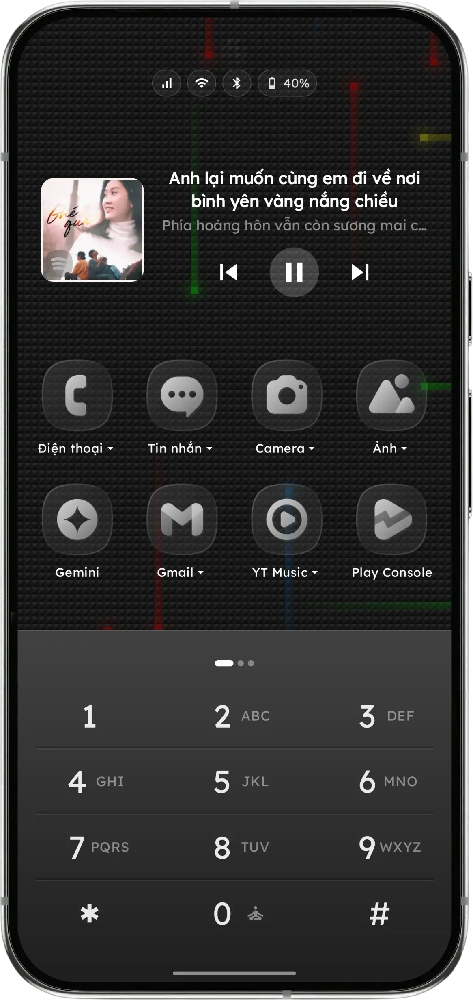

1. Thách Thức Công Thái Học Của Màn Hình Smartphone 6.7"+ Hiện Đại
Ngày nay, kích thước màn hình trung bình của smartphone Android đã chạm ngưỡng 6.5 đến 6.8 inch (Samsung Galaxy S24 Ultra, Xiaomi 14 Pro, Pixel 8 Pro). Với tỷ lệ màn hình dài 20:9 hoặc 19.5:9, việc sử dụng máy bằng một tay đã trở thành một bài toán vật lý hóc búa đối với gân và cơ bàn tay.
Theo nghiên cứu của nhà thiết kế Steven Hoober về hành vi tương tác di động:
- Vùng ngón cái tự nhiên (Natural Thumb Zone): Chiếm 1/3 góc dưới của màn hình — nơi ngón tay cái có thể chạm tới một cách thư giãn nhất mà không làm căng cơ khép ngón cái (adductor pollicis).
- Vùng rướn ngón (Stretch Zone): Chiếm 1/3 giữa màn hình — đòi hỏi xoay nhẹ cổ tay.
- Vùng nguy hiểm (Hard-to-Reach Zone): Chiếm 1/3 trên cùng của màn hình — dễ làm rơi máy hoặc gây viêm bao gân nếu rướn thường xuyên.
2. Thử Nghiệm Thao Tác: Dải Lướt Niagara vs. Bàn Phím Số T9
Cơ chế cốt lõi của Niagara Launcher là thanh cuộn chữ cái (A-Z) uốn cong dọc mép phải màn hình. Để mở một ứng dụng bắt đầu bằng chữ 'A' hoặc 'B', bạn phải rướn ngón cái lên tận góc trên cùng bên phải. Để chọn chữ 'Z', bạn phải gập ngón cái xuống góc dưới cùng.
Điều này tạo ra chuyển động quét dọc liên tục biên độ lớn (Vertical Finger Scrubbing), gây mỏi ngón tay cái khi bạn sử dụng điện thoại trong thời gian dài.

Giải pháp của Key Launcher: Cố định toàn bộ 12 phím số T9 (1-9, *, 0, #) gọn gàng trong Vùng Ngón Cái Tự Nhiên ở phần đáy máy.
3. Triết Lý Thông Báo: Trung Tâm Thông Báo (Niagara) vs. Siêu Tập Trung (Key Launcher)
Sự khác biệt lớn nhất giữa hai launcher nằm ở mục tiêu định hướng hành vi:
Niagara Launcher biến màn hình chính thành một Hub Thông Báo: Khi có tin nhắn WhatsApp, Zalo hay email, nội dung thông báo sẽ xổ ra ngay cạnh tên ứng dụng trên màn hình chủ. Mặc dù điều này giúp bạn xem nhanh tin nhắn, nhưng nó lại liên tục kéo sự chú ý của bạn vào các luồng thông tin mới, khiến bạn khó lòng "cai nghiện" smartphone.
Key Launcher theo đuổi triết lý "Tĩnh Lặng Số" (Digital Silence): Màn hình chính của Key Launcher chỉ hiển thị đồng hồ tối giản, các app thiết yếu do bạn chọn và bàn phím T9.

Khi bạn cần làm việc sâu, Super Focus Mode của Key Launcher sẽ kích hoạt bộ đếm Pomodoro 25 phút, tạm thời chặn các thông báo xao nhãng và đưa điện thoại về trạng thái một chiếc đồng hồ để bàn trang nhã.
4. Bảng Ma Trận So Sánh Kỹ Thuật Chi Tiết
| Tính năng kỹ thuật | Key Launcher | Niagara Launcher |
|---|---|---|
| Kiến trúc tương tác chính | Bàn phím T9 2 chạm cố định | Dải cuộn chữ cái A-Z hình sóng |
| Kho riêng tư bí mật | Nhiều kho riêng biệt khóa mã PIN/Vân tay | Chỉ ẩn app khỏi danh sách chính |
| Công cụ tập trung Pomodoro | Tích hợp sẵn, đồng hồ bàn xoay ngang | Không có |
| Quyền riêng tư & Ngoại tuyến | 100% Offline, Zero Cloud Telemetry | Sử dụng API đám mây (Thời tiết, v.v.) |
| Bàn phím QWERTY & Vuốt (Swipe) | Có (chuyển đổi 1 chạm sang QWERTY) | Không hỗ trợ bàn phím vuốt riêng |
| Mức giá bản quyền trọn đời | 149.000₫ (Việt Nam) / $19.99 Quốc tế | ~250.000₫/năm hoặc ~800.000₫ trọn đời |
5. Bạn Nên Chọn Launcher Nào?
Chọn Niagara Launcher nếu:
- Bạn thích xem và trả lời thông báo trực tiếp từ màn hình chính.
- Bạn thích hiệu ứng cuộn chữ cái đẹp mắt và có ngón tay dài.
- Bạn không quá bận tâm về việc cắt đứt nghiện màn hình.
Chọn Key Launcher nếu:
- Bạn dùng điện thoại màn hình lớn 6.7"+ và muốn thao tác 1 tay không mỏi ngón.
- Bạn muốn cai nghiện smartphone thực sự với Pomodoro và Kho riêng tư bảo mật.
- Bạn yêu thích tốc độ bấm số T9 2 chạm của điện thoại Nokia cổ điển.
- Bạn ưu tiên quyền riêng tư 100% ngoại tuyến và mức giá bản quyền trọn đời hợp lý.